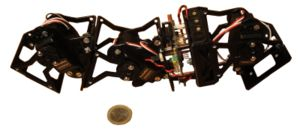

Configuración de 3 módulos con conexión de cabeceo-cabeceo
| |
Contenido
[ocultar]Introducción
Instrucciones de montaje
Mecánica
Electrónica
- Montaje del portapilas de la tarjeta Skycube
- Montaje del cable de descarga de software en la Skycube
Robots
- Montaje de UNIMOD A1
- Montaje de Minicube-I
- Montaje de Cube3
- Montaje de Unimod 2D
- Montaje de Minicube-II:
- Grupos pares: Montaje de Minicube-II de tipo A1
- Grupos impares: Montaje de Minicube-II de tipo B1
Historia
- 22/Julio/2010: Taller de robots modulares en el Campus científico de la UC3M. (Página del taller)
(Blog) (Vídeo)
- Nuevo record de España: Gusano robot de 18 módulos
- 7/Abril/2010: Primer curso de robots modulares impartido a estudiantes de la asignatura de robótica (Ingeniería Informática) (Página del taller)
(Blog)
- Nuevo record de España: Gusano robot de 12 módulos
- 5/Feb/2010: Presentada la propuesta para dar el I taller de Robots Ápodos Modulares en la Universidad Carlos III de Madrid (Blog) (PDF)
Enlaces
- Tarjeta Skycube
- Módulos MY
- Módulos Y1
- Unimod
- Minicube-I
- Cube3
- Robot Modular:Minicube-II
- Micro-osciladores. Software para el PIC16F876A para generar oscilaciones en los módulos
- Robótica Modular y Locomoción: Aplicación a Robots Ápodos. Tesis doctoral sobre la locomoción de robots modulares
Noticias
- 21/Enero/2010: Comenzada esta página